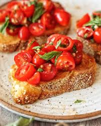

Home
Mama Mia's Bruschetta al Pomodoro Recipe

Bruschetta al Pomodoro
Bruschetta al pomodoro is the best way to use up all those ripe summer tomatoes. I love using ripe plum tomatoes
for this recipe, they are juicy, deep red and full of flavour. A good olive oil is a must and rustic crusty
bread make all the difference. This classic appetizer will never let you down if you choose the best, highest
quality ingredients you can get your hands on.
Ingredients
- large slices crusty white bread
- 4 large ripe plum tomatoes
- 1 clove garlic
- 1 small bunch basil
- 1 tbsp extra virgin olive oil
- salt and pepper
Steps
- Preheat a hot griddle pan. Drizzle a little olive oil on each side of the bread and toast on each side. Once
toasted, rub one side of each toast with a clove of garlic.
- Meanwhile, chop the tomato into small sized cubes and add to a bowl. Finely chop the basil and add to the
tomato with a pinch of salt and pepper. Add around 1/2 tbsp of olive oil and mix together.
- Arrange the toasts on a serving plate and top with the chopped tomatoes, serve.